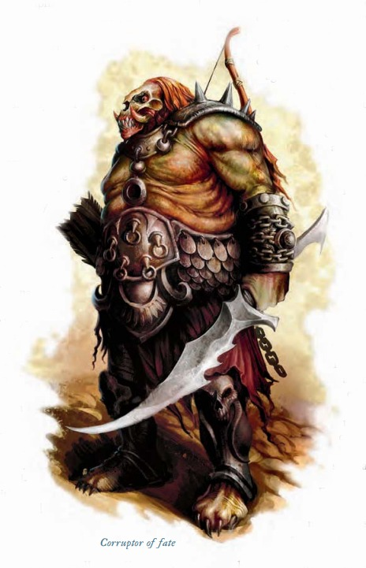

中型异界生物（邪恶，跨位面，尤格罗斯魔） | 挑战级数 5一个臃肿的生物，皮肤呈病态的黄色，身穿黑色镶钉皮甲，手持短剑和短弓。每当它发动攻击时，其身体散发出硫磺的气味，同时隐约可以听到骰子滚动的声音。
命运腐化者 ―― 始终为中立邪恶。
| 生命骰 | 7d8+21（52HP） |
| 先攻 | +8 |
| 速度 | 30 英尺 (6格) |
| 防御等级 | 18，接触 14，措手不及 14（+4敏捷，+4盔甲） |
| 基本攻击/擒抱 | +7 / +9 |
| 近战攻击 | 精制短剑 +12/+7 (1d6+2，19�C20重击，附带降咒) |
| 远程攻击 | 复合短弓 +11/+6 (1d6，×3重击) |
| 占据/触及 | 5 英尺 / 5 英尺 |
| 特殊攻击 | 阵营打击 (邪恶)，降咒，腐化凝视 |
| 特殊能力 | 黑暗视觉 60 英尺；免疫：酸、能量吸取、死灵效果、负能量效果、毒素；抗力：寒冷10，火焰10，闪电10；SR14；厄运 |
| 豁免 | 强韧 +8，反射 +9，意志 +5 |
| 属性 | 力量 15，敏捷 19，体质 17，智力 10，感知 10，魅力 10 |
| 技能 | 平衡+6，易容+10，脱逃+14，躲藏+14，跳跃+4，聆听+10，潜行+14，手上功夫+14，侦查+10，翻滚+14，使用绳索+4 (涉及捆绑时+6) |
| 专长 | 闪避、精通先攻、武器娴熟 |
| 语言 | 深渊语、龙语、炼狱语；心灵感应 100 英尺 |
| 装备 | +1 镶钉皮甲、精制短剑、复合短弓 (带20支箭矢) |
| 进化 | 通过角色等级提升 |
| 偏好职业 | 游荡者；详见后文 |
降咒 (Bestow Curse, Su)：命运腐化者可随意使用此能力，如同施放"降咒"。豁免 DC 16，施法者等级为 7。此能力会影响接触命运腐化者或其武器的目标。被诅咒的目标每轮需掷百分骰：掷出 01�C50 时，无法采取任何行动；掷出 51�C100 时，可以正常行动。这是一种死灵效果，对不死生物无效。豁免 DC 基于体质调整值。
腐化凝视 (Corrupting Gaze, Su)：命运腐化者能用目光攻击最多 30 英尺内的敌人。与其目光接触的生物必须通过 DC 13 的强韧豁免，否则受到 1d6 点伤害，并在攻击检定、技能检定和豁免检定上受到 -1 惩罚，持续 1 分钟。豁免 DC 基于魅力调整值。
厄运 (Unluck, Su)：攻击命运腐化者时，攻击者的攻击掷骰和伤害掷骰必须投两次并取较低结果。这是一种影响心灵的死灵效果。
这名臃肿的生物用宽松的黑色衣物和镶钉皮甲遮盖了大部分病态的黄色皮肤。
命运腐化者刺客 ―― 男性命运腐化者刺客 5 级，中立邪恶。
| 生命骰 | 12d8+60（111HP） |
| 先攻 | +11 |
| 速度 | 30 英尺 (6格) |
| 防御等级 | 24，接触 18，措手不及 24（+7敏捷，+5盔甲，+1偏斜，+1天生） |
| 基本攻击/擒抱 | +10 / +13 |
| 近战攻击 | +1 短剑 +18/+13 (1d6+4，19�C20重击范围，附带"降咒") |
| 远程攻击 | +1 复合短弓 +18/+13 (1d6+4，×3重击，附带毒素) |
| 占据/触及 | 5 英尺 / 5 英尺 |
| 特殊攻击 | 阵营打击 (邪恶)，夺命攻击，毒素 (暗影精华，DC 17，1点力量伤害/2d6点力量伤害)，偷袭 +3d6，腐化凝视 |
| 特殊能力 | 黑暗视觉 60 英尺；免疫：酸、能量吸取、死灵效果、负能量效果、毒素；抗力：寒冷10，火焰10，闪电10；SR19；厄运 |
| 豁免 | 强韧 +11 (对毒素 +13)，反射 +16，意志 +6 |
| 属性 | 力量 16，敏捷 25，体质 20，智力 13，感知 10，魅力 8 |
| 技能 | 平衡+19，易容+9，脱逃+17，躲藏+22，跳跃+5，聆听+15，潜行+22，手上功夫+17，侦查+15，翻滚+22，使用绳索+7 (捆绑相关+9) |
| 专长 | 闪避、精通先攻、灵活移动、武器娴熟 |
| 语言 | 深渊语、龙语、炼狱语；心灵感应 100 英尺 |
| 战斗装备 | 3剂暗影精华毒素，2瓶治疗重伤药水，1瓶飞行药水 |
| 装备 | +2 镶钉皮甲，+1 短剑，+1 复合短弓 (+3力量加值) 及20支箭，天生防御护符+1，防御戒指+1 |
| SQ | 用毒，厄运，尤格罗斯魔特性 |
厄运 (Unluck, Su)：与命运腐化者相同。攻击者的攻击和伤害掷骰必须投两次，取较低值。
降咒 (Bestow Curse, Su)：如同"降咒"法术，豁免 DC 18，施法者等级 12。
腐化凝视 (Corrupting Gaze, Su)：如命运腐化者，豁免 DC 15 的强韧检定可抵消效果。
夺命攻击 (Death Attack, Ex)：豁免 DC 16，若失败则目标麻痹 1d6+5 轮（见《DMG》第 180 页）。
命运腐化者因其独来独往、善于隐匿的特点，常修习刺客职业，以强化其残忍的能力。本文中的命运腐化者刺客在种族调整及属性成长前，其初始能力值为：力量 12，敏捷 15，体质 14，智力 13，感知 10，魅力 8。
命运腐化者通常单独行动，有时会与少量不死生物或构装体合作，但极少与其他命运腐化者结伴。在遭遇中，这些生物通常作为雇佣兵出现，执行任务以暗杀为主，但有时也会被用来守卫重要资产，尤其是在资产的所有者预料到潜在威胁时。尽管命运腐化者对任务极为认真，但它们同样拥有强烈的自我保护本能。如果发现自己明显处于劣势，它们会迅速撤退，打算稍后带着增援卷土重来。
与许多尤格罗斯魔不同，命运腐化者没有使用异界传送 (Plane Shift) 的天生能力。它们的位面移动通常由雇主安排或通过召唤与呼唤法术完成。
单独行动 (EL 5)：一名独行的命运腐化者可能在各种情境下被遇到。
EL 5：一名名为"厄运" (Misfortune) 的命运腐化者正在执行暗杀任务，其目标是一座小镇的镇长。至于为何要刺杀镇长，"厄运"并不清楚。她猜测这可能是她的雇主――一个夺心魔，设计的庞大而复杂阴谋的一部分。
守卫职责 (EL 6�C8)：命运腐化者经常与不死生物或构装体一起守卫重要地点。它更偏爱具有智慧的不死生物，如幽影或影魂，但也可能与骷髅和僵尸搭档。
EL 7：一名命运腐化者"灾厄" (Malefactor) 与两名幽影共同守卫一位半魔的住所。
异界盟约 (EL 5�C10)：通过异界盟约 (Planar Ally) 法术，可以召唤一名拥有最多5职业等级的命运腐化者。通过高级异界盟约 (Greater Planar Ally) 法术，可以召唤两名拥有最多2职业等级的命运腐化者。
EL 10：一名名为"恶行" (Malfeasance) 的命运腐化者刺客 (男性，5级) 被一位强大的牧师召唤至物质位面，任务是消灭一个烦人的敌人――这可能是玩家角色 (PC)。
突袭小队 (EL 8�C12)：命运腐化者可能带领其他尤格罗斯魔、不死生物或构装体执行任务。
EL 9："扭曲命运" (Twisted Fate) 是一名命运腐化者，她带领三名卡诺罗斯魔 (Canoloth, 见《怪物图鉴III》第200页) 对一个小村庄发动战略突袭，目的是从当地教堂夺取一件圣物。他们的雇主是强大的尼卡罗斯魔指挥官 (Nycaloth, 见《怪物图鉴III》第202页) "总指挥官伦德" (General Commander Render)。
守护者 (EL 12�C14)：守卫重要地点 (如位面之门) 是那些熟练的命运腐化者刺客的职责。
EL 12：一名命运腐化者刺客"灾祸" (Calamity, 女性，5级) 与一座石魔像共同守护一座位于物质位面废弃修道院中的传送门，该传送门通往焦炎地狱。
雇佣军部队 (EL 12�C18)：作为雇佣军，命运腐化者可能受雇于恶魔、魔鬼或更强大的尤格罗斯魔。
EL 14：两名尤格罗斯魔指挥官争论囚魂魔 (Devourer) 与惧栗缚灵 (Dread Wraith) 哪个更具致命性。为此，他们组建了一支突袭队，并招募了一名命运腐化者刺客"恶意" (Malice, 5级) 来记录杀戮。两名指挥官都以为"恶意"会偏袒自己，而"恶意"已收受双方贿赂，打算宣布比赛平局。
EL 16：一名名为"束魂者" (Soulbinder) 的11级人类巫妖，其巢穴位于大都市下水道，守卫包括一座铁魔像以及一名命运腐化者刺客"恶兆" (Malign, 5级)。
生态：命运腐化者是异界生物，无需睡眠、进食或呼吸。它们显得肥胖的体型是其天生外貌，与食物摄入无关。每年约有一周时间，每个成年命运腐化者都会感受到返回焦炎地狱 (Gehenna) 交配的本能冲动。一只幼年命运腐化者大约在十岁时达到成熟。母亲对新生的命运腐化者没有任何母性情感。她会将幼崽安置在焦炎地狱的托育场 (crèche) 中，由构装体或不死奴隶抚养。这些养育者能免疫幼崽的死灵能力。
环境：命运腐化者的原生位面是悲惨永恒的焦炎地狱。与其他尤格罗斯魔一样，它们是位面雇佣兵，前往雇主所派遣的任何地方。
典型身体特征：命运腐化者约 5 英尺高，体重约 200 磅，身体像一个极其肥胖的类人生物。相比之下，它的脸部却显得瘦削，黄色的薄皮紧贴在头骨上，双眼散发着诡异的光芒。男性和女性命运腐化者的外形极为相似。它们胸部的脂肪褶皱让大多数人误以为它们是女性 (侦查检定 DC 20 可正确辨别性别)。硫磺的气味是所有命运腐化者的典型特征，通常只有在命运腐化者发动攻击时才会被注意到。使用嗅觉追踪命运腐化者的技能检定可获得 +2 加值。命运腐化者伴随着微弱的骰子滚动声，这是一种由与它战斗的生物通过心灵感应"听到"的超自然幻觉。这是一种自动反应，无法被命运腐化者停止。
阵营：与所有尤格罗斯魔一样，命运腐化者始终为中立邪恶 (Neutral Evil)。
命运腐化者的一生通常是一个接一个的暴力任务。从出生开始，它们便学会了首先确保自身的生存，而不是优先考虑作为雇佣兵的职责。成长的过程极其艰难。年长的命运腐化者会折磨更弱小或年轻的同类。每个托育场通常由一名强大的尤格罗斯魔资助，管理者的更替往往会影响到幼年命运腐化者的成长。幼崽的抚养者完全没有任何关怀或母性可言，仅负责提供最基本的需求。
对于年轻的命运腐化者来说，最安全的生存策略就是避免引起注意。这样的环境为未来的刺客提供了理想的训练场：它们学会了潜行和伪装的重要性，同时磨练出对杀戮的渴望。这种成长过程使它们厌恶一切生物，尤其是其他命运腐化者，并让它们在与不死生物和构装体的共处中感到最自在。
一旦达到成熟，命运腐化者便会离开托育场。托育场的现任资助者会给它第一个任务，通常是刺杀一名竞争对手。如果新手能够完成任务，那么它的技能便被认为足以胜任刺客的进阶职业；如果任务失败，资助者会派出一支更有经验的队伍来完成这项任务。
尤格罗斯魔的资助者利用命运腐化者执行致命任务，也会用它们来对竞争对手或不服从的手下发出"警告"。这些"警告"通常以几乎致命的攻击形式出现，并附带诅咒效果。偶尔，某些命运腐化者可能决定违抗其资助者的命令，成为叛逃者，寻找新的邪恶主人。
典型财宝：没有职业等级的命运腐化者拥有标准的财宝，其挑战等级对应约 1,600 金币的价值。它们倾向于投资装备，显示出强烈的自我保护意识。大多数命运腐化者的装备包括耐用的护甲和武器，偶尔会带上一两瓶药剂或其他消耗品。刺客通常携带 2 至 5 瓶最喜欢的毒药。
玩家角色互动：玩家可以通过异界盟约 (Planar Ally) 法术召唤一名命运腐化者。此外，它们也可以通过召唤怪物 VI (Summon Monster VI) 或更高级的召唤怪物法术被召唤。将命运腐化者视为召唤怪物表 (《玩家手册》第287页) 中第六等级召唤列表的生物。
拥有职业等级的命运腐化者：命运腐化者偏好的职业是游荡者 (rogue)，其中许多人会选择刺客 (assassin) 这一进阶职业。罕见的命运腐化者如果选择成为牧师 (cleric)，则不会效忠任何神�o，而是遵循其种族哲学。这类牧师通常从死亡 (Death)、邪恶 (Evil) 和幸运 (Luck) 领域中选择信仰领域。
- 法术抗力 (Spell Resistance)：命运腐化者的法术抗力等于 14 + 每职业等级增加1。
- 等级调整 (Level Adjustment)：+4。
在艾伯伦 (Eberron)：命运腐化者作为佣兵，积极参与沙瓦拉斯战场 (Shavarath, the Battleground) 的各种冲突。尽管他们居住于玛伯尔 (Mabar)，他们的巢穴却位于亡者国度杜鲁尔 (Dolurrh, the Realm of the Dead)。因此，他们被视为两个位面的原生生物。
在费伦 (Faern)：命运腐化者居住在"末日与绝望之荒野" (Barrens of Doom and Despair)。由于该地与 Hammergrim 之间存在众多传送门，他们经常突袭 Hammergrim，有时甚至通过这些传送门进入物质位面 (Material Plane)。在费伦的命运腐化者牧师通常从命运 (Fate)、仇恨 (Hatred) 和幸运 (Luck) 领域中选择信仰领域。
具有 位面知识 (Knowledge [the Planes]) 技能等级的角色可以了解更多关于命运腐化者的信息。当角色成功进行技能检定时，可以揭示以下内容，包括较低难度的相关信息：
DC 15：命运腐化者是一种尤格罗斯魔 (yugoloth)，并拥有许多与其相同的特性。成功检定可以揭示所有异界生物和尤格罗斯魔的特性。
DC 20：触碰或被命运腐化者触碰会带来厄运。
DC 25 (第一条)：命运腐化者的凝视攻击不仅会对被注视者造成伤害，还会带来厄运。
DC 25 (第二条)：对命运腐化者的攻击经常会未能命中。即使成功命中或施放法术，其造成的伤害也会显著降低，尽管该生物似乎并不具备实际的伤害减免。